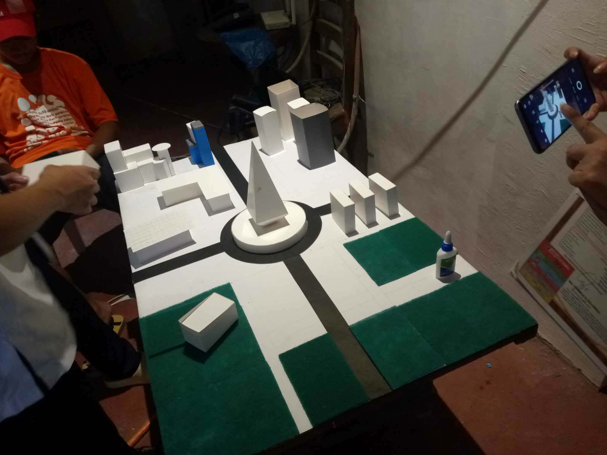
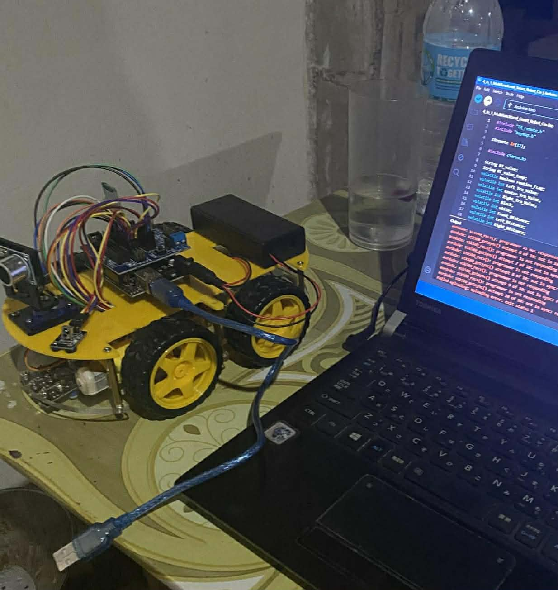
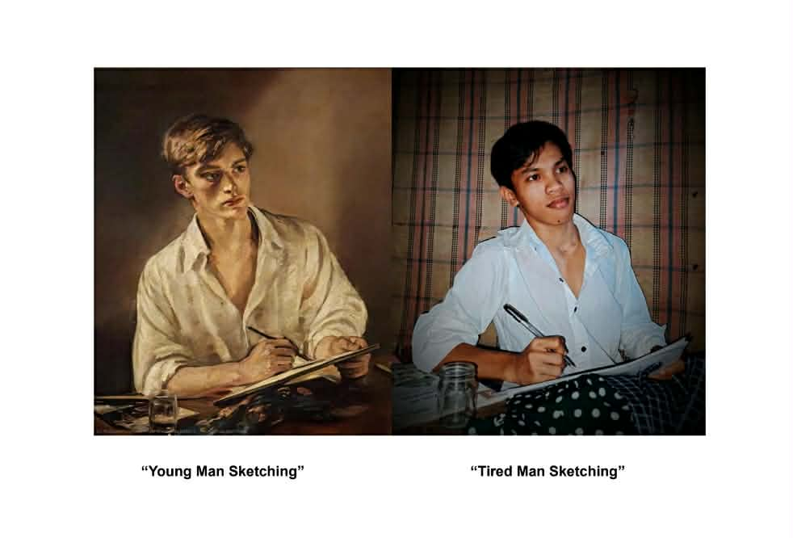
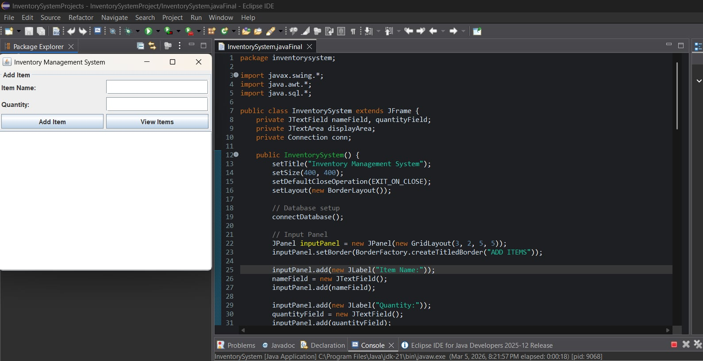
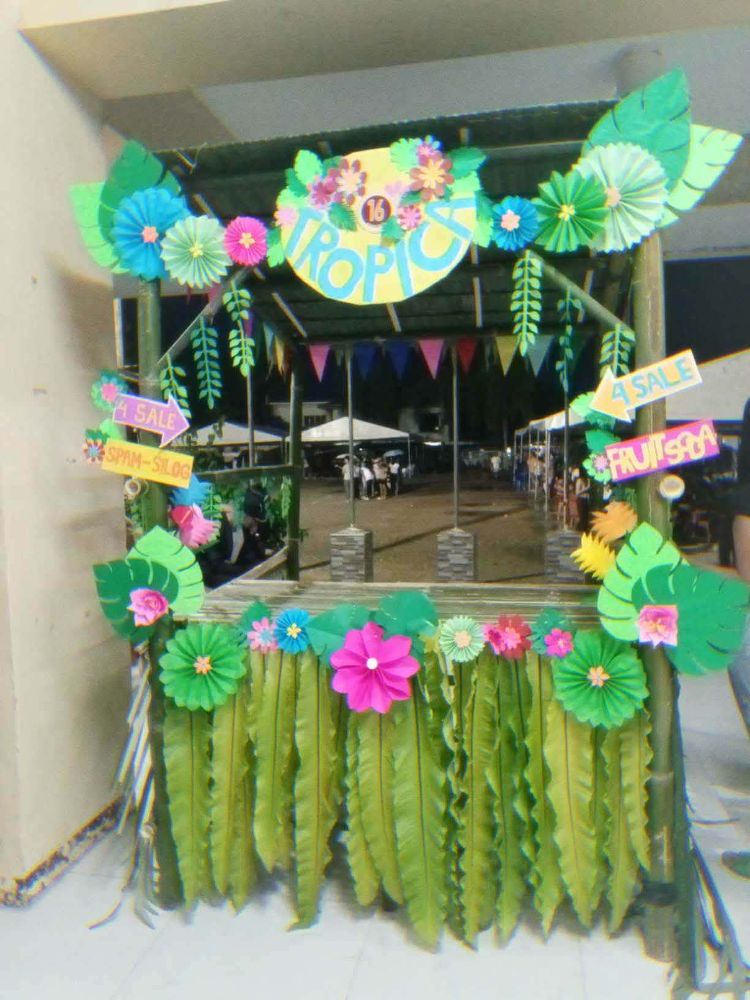

Back when we were first-year students, we created these dioramas to explore the theme of a sustainable society. Each diorama represents ways communities can improve the environment and promote responsible living. This project was guided by our instructor, Ma’am Claire Nicole Bacat.

This is our Lafvin Smart Robot, which we assembled ourselves during the first semester as part of our final requirements. Our instructor, Sir Dexter Alolod, guided us throughout the project. We learned how to build and program a robot and explored its functions.

This project is a recreated painting where we selected an original artwork and carefully copied it using different materials and techniques. We focused on matching the colors, details, and style of the original piece.

A Java Swing application with SQLite database that allows users to add, track, and view inventory items. Users can input item names and quantities and see them in a structured table.

A colorful, handcrafted tropical-themed stand created during our first year of college. Designed with paper flowers, leaves, and vibrant decorations for a school event.